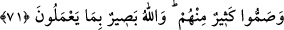

diğer hükümlere uyacaklarına dair “söz aldık ve onlara” uyarıda bulunacak ve
dinlerini öğretecek çok sayıda ve değerli “peygamberler gönderdik. Ne zaman bir
peygamber onlara nefislerinin arzu etmediği” hevâlarına uymayan hükümler,
meşakkatli teklifler gibi “bir şey getirdiyse” ona isyan ve düşmanlık ettiler. “Onlara
nasıl isyan ettiler?” şeklindeki mukadder bir soruya da şöyle cevap verilmektedir:
“Onlardan bir kısmını” peygamberlerden bir kısmını başka bir zarar vermeden sadece
“yalanladılar, bir kısmını da” Zekeriyyâ ve Yahyâ (a.s.) gibi peygamberleri yalnız
yalanlamakla kalmayıp “öldürüyorlardı.”
71. Bir fitne kopmayacak zannettiler de kör ve sağır kesildiler. Sonra Allah
onların tevbelerini kabul etti. Sonra içlerinden çoğu yine kör ve sağır oldu. Allah
onların yaptıklarını görmektedir.
“Bir fitne kopmayacak zannettiler de” Yani İsrâiloğulları peygamberleri
yalanlamalarının ve öldürmelerinin neticesinde Allah Teâlâ’nın kendilerini belâya ve
azâba dûçar etmeyeceğini zannettiler. İşte bu düşünceyle peygamberleri yalanladıkları
ve öldürdükleri için hatâlı olduklarına inandıkları halde böyle zannetmelerinin sebebi
şuydu: “Biz Allah’ın oğulları ve sevgilileriyiz.” (el-Mâide, 5/18) diyorlardı ve bu
öldürme ve yalanlama sebebiyle hak ettikleri azâbı geçmişlerinin ve atalarının
peygamber olmasının kendilerinden uzaklaştıracağına inanıyorlardı.
Bu düşüncelerini müteakiben de “kör ve sağır kesildiler.” Kendilerini Allah’ın
azâbından emin gördüler, türlü azgınlık ve fesatlara devam ettiler. Sanki kendilerine
peygamber gelmemiş, sanki onlara doğru yolu göstermemiş gibi dîni görmezden
geldiler. Önünü göremeyen kör gibi hareket ettiler. Peygamberlerin kendilerine
duyurduğu hakkı duymazlıktan geldiler. Hiçbir şey duymayan sağır gibi hareket ettiler.
Böyle olunca da peygamberlere yapacaklarını yaptılar.
Ebussuud Efendi şöyle der: Bu, İsrâ sûresinde İsrâiloğulları’nın çıkaracakları
bildirilen iki fesadın (bk. el-İsra, 17/14) ilkidir. Bu ilk fesatlarında Tevrat’ın emirlerini
terkedip haramlara dalmışlar ve Şuayb (a.s.)’ı öldürmüşlerdi. Bir başka rivayete göre
ise Ermiyâ peygamberi hapsetmişlerdi.
Bâbil’de Buhtunnasr’ın esâreti altında son derece zillet içerisinde uzun bir zaman
kaldıktan sonra tevbe edip bu hallerinden döndükten “sonra Allah onların tevbelerini
kabûl etti.” AllahTeâlâ Farslı büyük bir hükümdarı, Beytü’l-makdis’i tamir etmesi ve
Buhtunnasr’ın esir aldığı İsrâiloğulları’ndan geri kalanları kurtarması için Kudüs’e
gönderdi. O, onları vatanlarına geri getirdi. Köşe bucağa dağılanlar da döndüler. Otuz
senede Kudüs’ü îmar ettiler, çoğaldılar ve önceden olduklarından daha iyi hâle geldiler.
“Sonra içlerinden çoğu yine kör ve sağır oldu.” Bu, İsrailoğulları’nın çıkaracakları